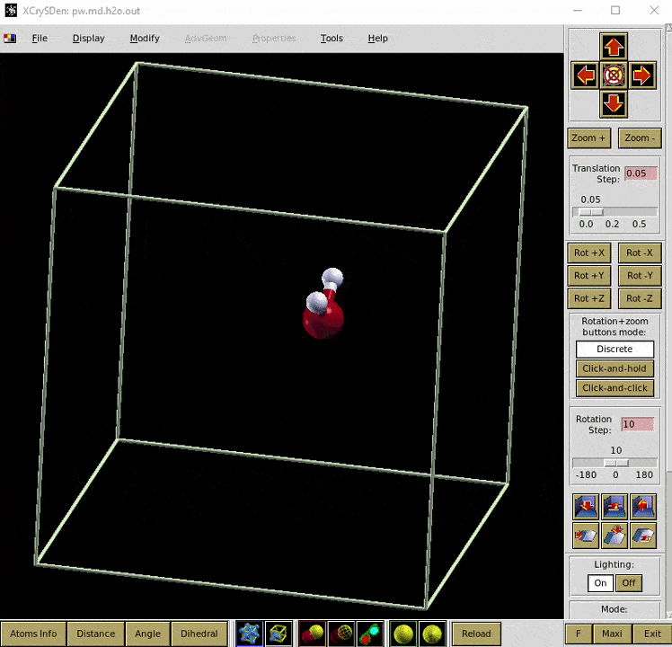

Dinâmica molecular (PW)
Vamos partir do cálculo de relaxação e usar a estrutura relaxada no cálculo md. Abaixo está o arquivo de entrada do cálculo md:
src/H2O-md-pw/pw.md.h2o.in
&control
calculation = 'md'
restart_mode = 'from_scratch'
prefix = 'h2o'
outdir = './tmp/'
pseudo_dir = '../pseudos/'
tstress = .true.
tprnfor = .true.
! about 1 fs; 1 a.u. = 0.048378 fs
dt = 20
nstep = 100
/
&system
ibrav = 1
celldm(1) = 15
nat = 3
ntyp = 2,
ecutwfc = 40
nosym = .true.
/
&electrons
conv_thr = 1e-8
/
&ions
pot_extrapolation = 'second-order'
wfc_extrapolation = 'second-order'
ion_temperature = 'initial'
tempw = 300
/
ATOMIC_SPECIES
H 1.00784 H_ONCV_PBE-1.0.oncvpsp.upf
O 15.999 O.pbe-n-kjpaw_psl.0.1.UPF
! relaxed structure
ATOMIC_POSITIONS (angstrom)
O 5.0000068025 4.8011777008 4.9999667189
H 4.9999962341 5.3994076541 5.7670041300
H 4.9999969634 5.3994146451 4.2330291511
K_POINTS automatic
1 1 1 0 0 0O arquivo de saída do Quantum ESPRESSO pode ser aberto no XCrySDen para visualização.

Conteúdo adaptado de Molecular Dynamics (using pw.x), do Quantum Espresso Tutorial de Pranab Das, sob licença CC BY 4.0. Alterações: texto traduzido para o português; layout e navegação adaptados.